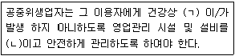

미용장 (2006-07-16 기출문제)
1과목: 임의 구분
1. 모발이 가장 안정된 상태일 때의 pH는?
- pH4.5~5.5
- pH7
- pH7.5~8.5
- pH9~10
(정답률: 89%)

2. 머리카락의 길이가 탑(Top)로 갈수록 짧아지며 전체적으로 율동감이 큰 커트는?
- 그래듀에이션(graduation)
- 레이어(layer)
- 스퀘어(square)
- 수평단발(one-length)
(정답률: 67%)
3. 염색에 있어서 텍스쳐(texture)와 다공성(porosity)의 영향으로 옳은 것은?
- 두꺼운 텍스쳐의 모발일수록 빠른 시간에 염색이 가능하다.
- 모발의 다공성은 모근쪽에서 모끝까지 균일하므로 염색에서 모끝을 기준으로 하는 것이 좋다.
- 저항성 모발은 다공성이 매우 낮은 모발로 균일한 염색을 위해 사전 연화과정이 필요 한다.
- 다공성이 매우 높은 모발은 일반적으로 모표피가 많이 열려 있으므로 염모제의 방치시간을 길게 해야 한다.
(정답률: 85%)
4. 일반적인 페이셜 마사지의 시술방법이 틀린 것은?
- 경찰법 - 양손바닥과 손가락을 사용하여 왕복운동과 원형운동으로 가볍게 행한다.
- 유연법 - 피부 유연은 엄지를 피부에 밀착시키고 검지와 장지로 피부를 집어서 시술한다.
- 고타법 - 양손 엄지와 검지, 중지로 두드리는 동시에 집어 올리거나 영손 엄지를 제외한 네 손가락으로 피부를 튕기듯이 두드린다.
- 진동법 - 왼손 중지에 검지를 포개 놓고 엄지와 함께 ㄷ자 형을 만든 후, 오른손 중지에 검지를 포개놓고 ㄷ자 형 사이에 그 손가락을 넣어 나선형을 그리도록 해서 강하게 한다.
(정답률: 74%)
5. 2욕식 콜드 퍼머넨트 웨이브의 2액에 대한 설명 중 맞는 것은?
- 시스틴 결합을 재결합시킨다.
- 프로세싱 솔루션이라고 한다.
- 치오글리콜산을 주성분으로 한다.
- 환원작용을 한다.
(정답률: 74%)
6. 피부세포의 라이프 싸이클을 순조롭게 유지하고 피부노화 방지를 위해 가장 중요한 것은?
- 피부청결
- 가벼운 화장
- 심한운동
- 금연
(정답률: 74%)
7. 피부의 주조 중 진피층을 구성하는 대부분의 물질은 무엇인가?
- 각질형성세포(keratincyte)
- 색소형세포(melanocyte)
- 세망섬유(reticular fiber)
- 교원섬유(collagenous fiber)
(정답률: 62%)
8. 성분은 유화셀린과 같은 특수한 황화화합물을 배합한 것으로 노화각질을 용해시키는 샴푸제는?
- 비누 샴푸제
- 콘디셔닝 샴푸제
- 고급 알코올계 샴푸제
- 비듬제거용 샴푸제
(정답률: 57%)
9. 다음 중 탈색과 관계가 가장 먼 용어는?
- 헤어 라이트닝(hair lightening)
- 다이 터치 업(dye touch up)
- 과산화수소
- 헤어 블리치(hair bleach)
(정답률: 56%)
10. 루프가 두피에 0° 각도로 평평하고 모근쪽에서 컬을 말아 두발 끝이 컬의 바깥쪽이 되는 것은?
- 스탠드업 컬(stand up curl)
- 스컬프쳐 컬(sculpture curl)
- 리프트 컬(lift curl)
- 메이폴 컬(maypole curl)
(정답률: 36%)
11. 블로 드라이 작업시 텐션을 줄 수 없어 윤기가 적어 주로 짧은 머리형태에 하는 남성 헤어스타일 연출에 적합한 브러시는?
- 덴맨 브러시
- 쿠션 브러시
- 돈모 브러시
- 벤트 브러시
(정답률: 16%)
12. 다음 중 삼한시대(三韓時代)의 머리형으로 옳은 것은?
- 다른 나라의 포로를 노예로 만들어 머리를 깍아서 표시 했고 수장급은 관모를 썼다.
- 양쪽 귀 옆에 두발의 일부를 늘어뜨린 푼기명 머리, 뒷머리에 낮게 두발을 묶는 중발 머리를 했다.
- 남자는 상투, 혼인한 부인은 쪽머리, 처녀는 두갈래로 땋은 댕기머리를 했다.
- 쪽진머리, 큰머리, 조짐머리, 둘레머리 등을 하였다.
(정답률: 55%)
13. 모발과 두피의 트리트먼트시술의 주요 목적은?
- 두피 경화 촉진
- 모발, 두피의 건강 촉진
- 모발 밀도 감소
- 모발 탈색 촉진
(정답률: 86%)
14. 여드름의 원인과 가장 거리가 먼 것은?
- 피지분비량 증가
- 모공이 좁아지거나 막힘
- 세균번식
- 여성호르몬 증가
(정답률: 94%)
15. 위그 가발의 재질을 구별하는 방법에 대한 내용으로 가장 적합한 것은?
- 인조가발은 태우면 빠르게 타고 고약한 냄새가 나고, 타고 남은 재가 쉽게 부스러진다.
- 인조가발은 가격이 저렴하고 퍼머넌트 웨이브, 탈색 등의 시술이 용이하다.
- 인모가발은 태우면 턴턴히 타고 손으로 비비면 부스러진다.
- 인모가발은 컬이 잘 유지되면 햇볕에 변색 산화되지 않는다.
(정답률: 34%)
16. 다음 중 모발의 주요 결합이 아닌 것은?
- 시스틴 결합
- 수소 결합
- 염 결합
- 에스테르 결합
(정답률: 81%)
17. 산성린스를 대신 할 수 있는 것은?
- 물
- 희석 된 식초
- 중성제
- 암모니아수
(정답률: 63%)
18. 표피층 중 새세포 형성의 역할을 가지며 표피의 가장 깊은 곳에 위치한 세포층은?
- 각질층
- 과립층
- 유극층
- 기저층
(정답률: 57%)
19. 퍼머넌트 웨이브의 설명 중 틀린 것은?
- 펌 1제의 주성분은 취소산 나트륨이다.
- 1936년 영국의 스피크먼에 의해 콜드웨이브 펌이 개발 되었다.
- 치오글리콜산염의 농도는 2~7%이다.
- 퍼머넌트 웨이브는 1906년 영국의 찰스네 슬러에 의해 발표되었다.
(정답률: 75%)
20. 다음 커트 중 공통점이 가장 적은 것은?
- 이사도라
- 스파니엘
- 머쉬룸
- 스퀘어
(정답률: 64%)
2과목: 임의 구분
21. 평균적인 컬이나 웨이브를 만들 때에 적당하며, 하나씩 독립된 컬에 사용하는 베이스는?
- 스퀘어 베이스(square base)
- 오블롱 베이스(oblong base)
- 아크 베이스(arc base)
- 트라이앵글러 베이스(triangular base)
(정답률: 39%)
22. 마샬웨이브에 대한 설명 중 옳지 않은 것은?
- 그루브 핸들은 오른손의 엄지와 검지에 끼고 프롱핸들을 약지와 새끼손가락의 3관절에 끼워서 죈다.
- 아이론의 온도는 일정한 것이 좋으며 120~140℃가 적당하다.
- 빗은 두발에 대해 두발의 방향과 스트랜드의 면에 수평이 되도록 주의한다.
- 오일아이론은 두발의 손상을 줄이며 윤기를 주는 특징이 있다.
(정답률: 20%)
23. 베포라이저(Vaporizer)의 사용방법으로 가장 거리가 먼 것은?
- 얼굴과 기기의 간격을 40㎝ 정도로 유지한다.
- 사용 후 물을 빼서 보관한다.
- 이마 쪽에서 얼굴 아래로 흩어지게 한다.
- 물 때가 끼는 경우 증류수와 식초를 넣어 하룻밤 둔 후 헹구어 둔다.
(정답률: 48%)
24. 모발 탈모의 원인으로 가장 거리가 먼 것은?
- 혈액순환 장애
- 영양부족
- 세포의 노화
- 테스토스테론의 감소
(정답률: 77%)
25. 짧은 머리를 입체감을 주면서 자연스러운 느낌으로 마무리 하려면 어떤 컬러링 방법이 가 장 좋은가?
- 두발뿌리 부분을 밝게, 두발 끝으로 갈수록 어두워지도록 바른다.
- 위빙 슬라이스로 머릿결을 강조하여 바른다
- 두발뿌리 부분을 검게, 두발 끝으로 갈수록 밝아지도록 바른다.
- 두상 전체를 어둡게 한다.
(정답률: 52%)
26. 샴푸제에 관한 설명으로 맞는 것은?
- 샴푸제에 사용되는 계면활성제 중 가장 일반적인 것은 고급 알코올계 계면활성제이다.
- 샴푸제의 첨가제 중 증점제는 기포증진을 위한 것이다.
- 양성계면활성제는 물에 목았을 때 양이온 성질을 가짐으로써 대전 방지 효과가 있다.
- 컬러픽스 샴푸는 모발에 일시적인 컬러를 낼 수 있는 샴푸이다.
(정답률: 17%)
27. 항산화 작용으로 노화를 방지하는 비타민으로 토코페롤이라고 불리기도 하는 것은?
- 비타민 A
- 비타민 B
- 비타민 C
- 비타민 D
(정답률: 7%)
28. 전체의 커트 디자인이 네이프에서 두상의 탑으로 올라갈수록 머리의 길이가 점점 길어지는 형태의 커트로 볼륨을 주기 위해 많이 이용하는 커트 방법은?
- 원랭스(one-length)
- 그래듀에이션(graduation)
- 레이어(layer)
- 포인팅(pointing)
(정답률: 58%)
29. 다음에서 두피 비듬에 관한 설명 중 잘못 된 것은?
- 두피에서 과잉 분비되는 비늘모양의 비염증성 생리물질이다.
- 세균인 파티로스포럼의 이상증식으로 비듬이 생긴다.
- 샴푸가 나오기 전에는 비듬환자가 없었다.
- 스트레스가 많으면 비듬이 만이 생길 수도 있다.
(정답률: 56%)
30. 아이 새도우 기법에서 하이라이트 컬러를 하 는 목적과 관계 없는 것은?
- 좁아 보이거나 들어가 보이게 할 때
- 돌출되어 보이게 할 때
- 넓어 보이게 할 때
- 크게 보이게 할 때
(정답률: 45%)
31. 다음 중 습열멸균방법이 아닌 것은?
- 자외선멸균
- 고압증기멸균
- 자비멸균
- 저온소독법
(정답률: 70%)
32. 다음 중 복어의 식중독 원인 독소는?
- 솔라닌
- 무스카린
- 테트로도톡신
- 베네루핀
(정답률: 77%)
33. 초자기구, 도자기류, 목죽제품 등의 소독에 가장 부적합한 것은?
- 석탄산수
- 크레졸수
- 생석회유
- 포르말린 수용액
(정답률: 33%)
34. 인체감염의 방법이 주로 경피로 감염되는 기생충은?
- 편충
- 요충
- 십이지장충
- 간디스토마
(정답률: 27%)
35. 알코올 소독에 관한 설명으로 가장 거리가 먼 것은?
- 단백질 변성의 작용이 있다.
- 대사기전에 저해작용을 한다.
- 70%가 일반적인 희석농도이다.
- 포자균의 멸균에 효과가 크다.
(정답률: 53%)
36. “이타이 이타이”병을 유발하는 원인물질은 무엇인가?
- 카드륨(Cd)
- 아연(Zn)
- 납(Pb)
- 수은(Hg)
(정답률: 34%)
37. 산업재해의 통계에 주로 사용되는 지표가 아닌 것은?
- 도수율
- 노동율
- 강도율
- 건수율
(정답률: 38%)
38. 음용수 소독의 목적으로 주로 사용하는 약제는?
- 불소
- 염소
- 질소
- 수소
(정답률: 37%)
39. 지역사회의 보건수준을 나타내는 가장 대표적인 지표는?
- 평균수명
- 평균여명
- 모성사망율
- 영아사망율
(정답률: 30%)
40. 구순염, 설염, 지루성 피부염등과 밀접한 관계가 있으며 리보플라빈이라고 불리는 비타민은?
- 비타민A
- 비타민B2
- 비타민C
- 비타민D
(정답률: 44%)
3과목: 임의 구분
41. 살모넬라 식중독에 관한 설명 중 가장 관계가 먼 것은?
- 위장계통의 증상과 고열이 있다.
- 잠복기간은 12~48(평균20)시간 전후이다.
- 인축 공통 전염병이다.
- 독소형 식중독이다.
(정답률: 35%)
42. 내열성이 강해서 자비소독으로는 효과가 없는 것은?
- 살모넬라균
- 포자형성균
- 아베바 영양형
- 결핵균
(정답률: 59%)
43. 다음 중 대기오염의 증가요인에 해당되지 않는 것은?
- 풍력이 낮을수록
- 기온이 높을수록
- 인구증가가 클수록
- 주민의 관심이 낮을수록
(정답률: 34%)
44. 소독제 0.25g을 2,000㎖ 물에 희석시키면 몇 피피엠(ppm)이 되는가?
- 12.5ppm
- 125ppm
- 1,250ppm
- 12,500ppm
(정답률: 28%)
45. 공기중 호흡곤란을 일으키는 산소의 농도 기준과 군집독의 주증상은?
- 10%정도, 두통
- 7%정도, 두통
- 15%정도, 출혈
- 20%정도, 출혈
(정답률: 75%)
46. 작업환경 관리의 일차적인 목적과 관련이 가장 먼 것은?
- 직업병 예방
- 산업재해 예방
- 산업피로 억제
- 생산성 증대
(정답률: 46%)
47. 산전관리가 필요한 임산부의 질환 중 부종, 단백뇨, 고혈압이 주요증상으로 나타나며 경련, 태반조기박리, 폐수종등을 수반하는 증후군은?
- 골반내감염
- 임신성 빈혈
- 자궁외임신
- 임신중독증
(정답률: 40%)
48. 다음 중 유충이 가재나 게 등을 통해 감염되는 기생충과 모기가 옮기는 질병이 맞게 짝지워진 것은?
- 간흡충-페스트
- 폐흡충-일본뇌염
- 회충-말라리아
- 긴촌충-소아마비
(정답률: 62%)
49. 화학소독제의 살균력을 측정할 때의 지표로 사용되는 소독제는?
- 크레졸
- 석탄산
- 알코올
- 승홍
(정답률: 36%)
50. 소독에 관한 설명이 옳게 된 것은?
- 모든 미생물 자체를 없애는 것
- 병원균도 있고 질병을 야기시킬수 있는 상태로 만드는 것
- 병원미생물의 생활력을 파괴하여 감염력을 없애는 것
- 소독, 멸균, 방부는 같은 뜻이다.
(정답률: 30%)
51. 다음 중 ( )에 알맞은 것은?

- ㉠-상해, ㉡-깔끔
- ㉠-위해요인, ㉡-위생적
- ㉠-위해요인, ㉡-쾌적
- ㉠-상해, ㉡-청결
(정답률: 53%)
52. 최우수 업소의 위생관리등급 구분은?
- 녹색등급
- 청색등급
- 황색등급
- 적색등급
(정답률: 40%)
53. 이ㆍ미용업소의 개선명령에 위반 했을 때의 처벌규정은?
- 300만원 이하의 과태료
- 200만원 이하의 과태료
- 300만원 이하의 벌금
- 200만원 이하의 벌금
(정답률: 17%)
54. 이 ㆍ 미용업은 폐쇄명령을 받은 후 어느 정도의 기간이 경과되어야 동일 장소에서 동일 영업이 가능한가?
- 3개월
- 6개월
- 9개월
- 12개월
(정답률: 36%)
55. 위생서비스 평가계획을 수립하여야 하는 자는?
- 대통령
- 보건복지부장관
- 시 ㆍ 도지사
- 시장 ㆍ 군수 ㆍ 구청장
(정답률: 19%)
56. 이ㆍ미용업의 면허를 취득할 때 면허를 부여하는 자는?
- 보건복지부장관
- 시 ㆍ 도지사
- 시장 ㆍ 군수 ㆍ 구청장
- 한국산업인력공단 이사장
(정답률: 67%)
57. 다음 중 위생 교육을 받아야 하는 대상자는?
- 보조원
- 이 ㆍ 미용사
- 경영주
- 공중위생영업자
(정답률: 32%)
58. 이 ㆍ 미용업을 신고하고자 하는 자가 제출하여야 하는 서류와 관계가 없는 것은?
- 면허증 원본
- 영업시설 및 설비 개요서
- 교육필증
- 이 ㆍ 미용사 자격증
(정답률: 25%)
59. 공중위생관리법 제7조 위반하여 변경신고를 하지 아니하고 영업소의 소재지를 변경한 때의 행정처분 기준은?
- 영업정지 20일
- 개선명령
- 영업장 폐쇄명령
- 영업정지 1월
(정답률: 42%)
60. 공중이용이설 안에서의 일산화탄소(CO)의 오염허용기준은 1시간 평균치가 몇 ppm 이하인가?
- 5ppm
- 15ppm
- 25ppm
- 35ppm
(정답률: 22%)